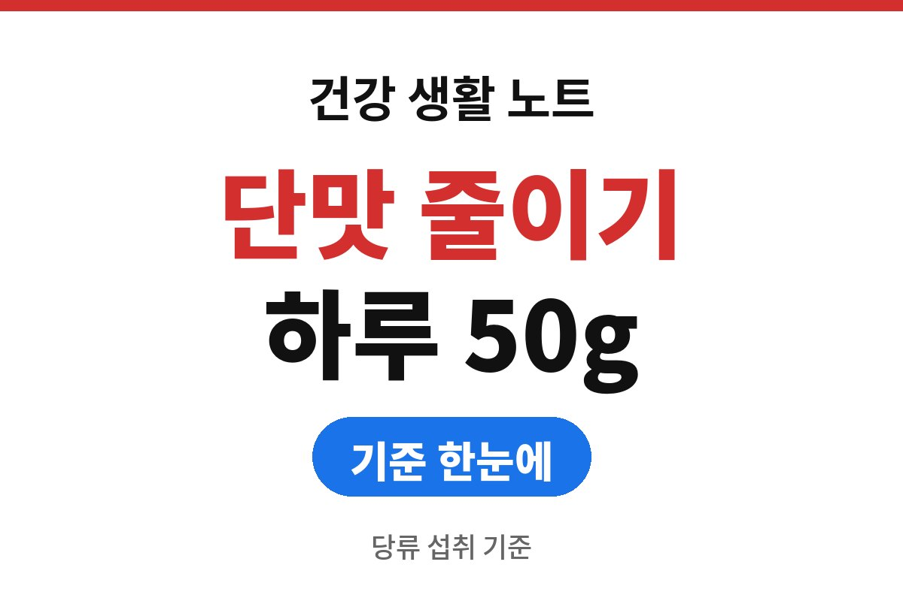
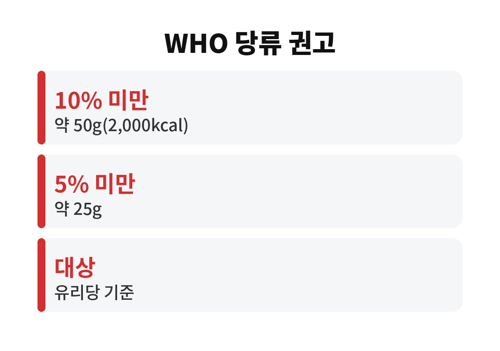
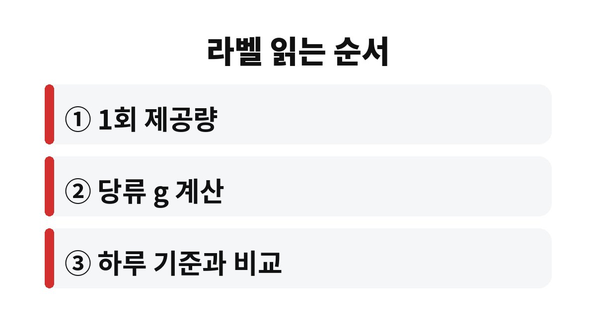

당류 하루 섭취 기준은 WHO가 총 에너지 섭취량의 10% 미만으로 권고하고, 2,000kcal 식사 기준으로 약 50g이다.
여기서 5% 미만, 약 25g까지 줄이면 건강상 이득이 더 있다고 WHO는 덧붙인다.
2026년 11월 기준 공식 권고와 영양성분표를 읽는 순서를 정리했다.
단맛이 약한 음료와 소스에도 당류가 들어 있는 경우가 많다.
양념 불고기 소스, 시리얼, 요거트처럼 간식이 아닌 식품에도 설탕이 첨가된다.
그래서 맛으로 짐작하지 말고 포장지 뒷면을 확인하는 습관이 필요하다.
무가당은 설탕 같은 당류를 따로 넣지 않았다는 뜻이고, 과일 자체의 당이 남아 있는 제품도 있다.
나는 '무가당 주스'를 건강식으로 알고 매일 마시다가 당류 칸을 보고서야 양을 줄였다.
카페 음료는 포장지가 없어 더 헷갈린다.
매장 누리집이나 매장 안 영양정보 안내판에는 음료별 당류 함량이 공개된 곳이 많아서 주문 전에 확인할 수 있다.
큰 컵 한 잔에 하루 기준의 절반 이상이 들어 있는 메뉴도 있다.
WHO가 줄이라고 하는 것은 '유리당'이다.
설탕, 꿀, 시럽, 과일주스 속 당처럼 가공 과정이나 조리 중에 더해진 당과, 꿀·시럽·주스에 든 당을 모두 합친 개념이다.
과일 통째로 먹을 때의 당은 이 권고에서 제외된다.
한국에서도 식품의약품안전처가 당류 섭취를 줄이도록 영양성분표 표시 방법을 안내해 왔다.
포장 식품에서는 '당류' 항목이 총당류를 뜻하므로, 이 칸의 숫자를 하루 기준과 비교하면 된다.
예를 들어 점심 후 달콤한 믹스커피 한 잔과 오후 탄산음료 한 캔을 마시면, 식사에서 먹은 당류를 빼고도 하루 기준에 가까워질 수 있다.
음료가 눈에 잘 안 띄는 이유는 씹지 않고 마셔서 먹었다는 감각이 약하기 때문이다.
원재료명에서 설탕, 물엿, 포도당, 과당, 올리고당 같은 이름이 앞쪽에 있다면 첨가된 당이 많다는 신호로 읽는다.
원재료는 많이 들어간 순서로 적히기 때문에 앞줄에 있을수록 비중이 크다.
이름이 다양해 눈에 안 띄므로, 당류 칸과 원재료명을 같이 보는 습관이 도움이 된다.
10%와 5%는 먹는 총 에너지에 비례해 달라지는 비율 기준이다.
하루 1,600kcal를 먹는 사람은 10%가 160kcal, 당류로는 약 40g이다.
활동량이 적은 사람이나 체중 관리 중인 사람은 총 섭취량이 적을 테니 기준 숫자도 낮아진다.
반대로 하루 에너지 섭취량을 모르겠다면 우선 2,000kcal 기준 50g을 상한 눈금으로 쓰고, 정확한 필요량은 영양 상담에서 확인하는 편이 낫다.
| 하루 섭취 에너지 | 10% 미만 | 5% 미만 |
|---|---|---|
| 1,600kcal | 약 40g | 약 20g |
| 2,000kcal | 약 50g | 약 25g |
| 2,500kcal | 약 62g | 약 31g |

음료 한 병의 당류가 20g이라면 하루 기준 50g의 40%를 한 번에 쓰는 셈이다.
이렇게 비율로 바꿔 보면 간식 하나의 무게가 훨씬 또렷하게 보인다.

당뇨 진단을 받았거나 혈당이 높게 나온 사람은 이 기준 하나로 식사를 정하지 말고 의사나 영양사와 먼저 상의해야 한다.
오늘 냉장고에서 가장 자주 꺼내는 음료 하나를 골라 당류 칸의 숫자부터 읽어 본다.
외식 메뉴처럼 성분표가 없는 음식은 소스와 음료를 줄이는 쪽으로 균형을 맞춘다.
참고 자료: WHO 「Guideline: Sugars intake for adults and children」(2026년 11월 확인) · 식품의약품안전처 「영양성분 표시 안내」(2026년 11월 확인)
※ 2026년 기준 공식 기준을 바탕으로 정리한 일반 건강 정보이며, 증상이 계속되거나 지병이 있다면 전문의와 상담하길 바란다.